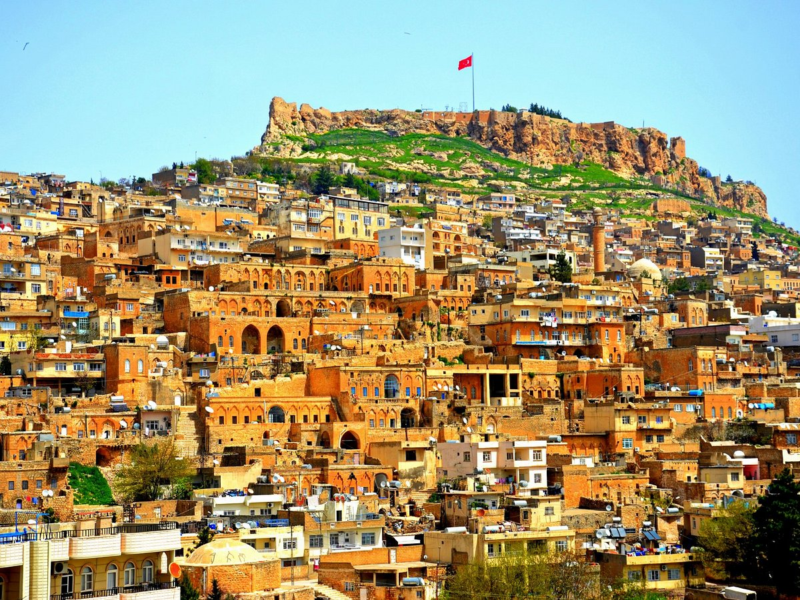
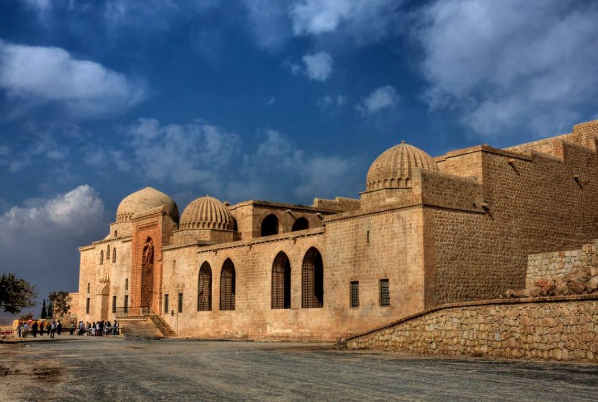
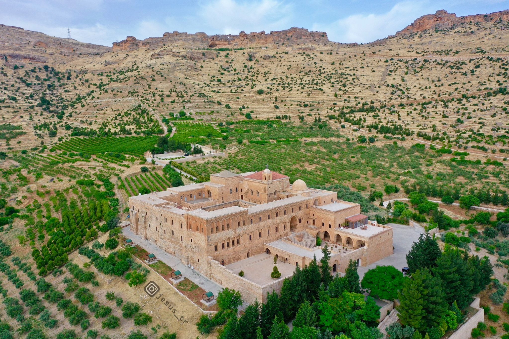
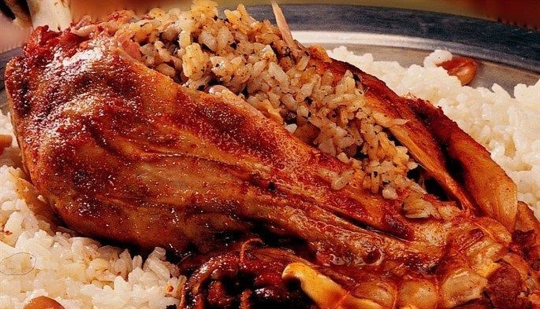
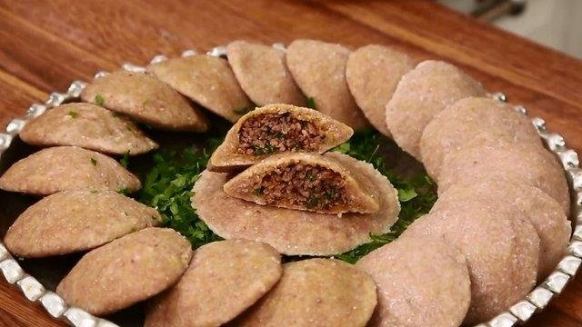
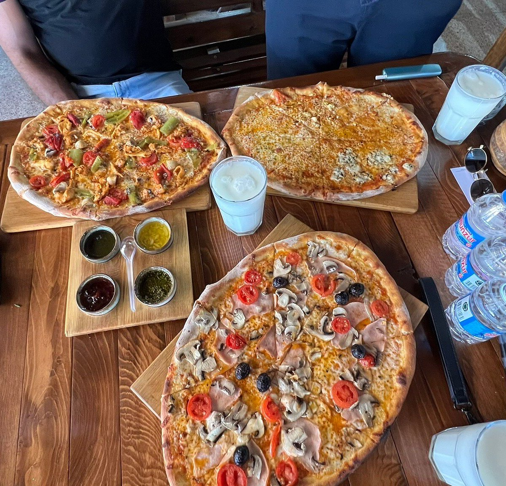

Taşın ve İnancın Şiiri: Mardin
Farklı kültürlerin, dillerin ve dinlerin hoşgörüyle harmanlandığı masal şehri.

Tarihi Mardin Evleri
Mezopotamya ovasına nazır, birbirinin manzarasını kapatmayan o meşhur taş mimari.

Kasımiye Medresesi
Artuklu mimarisinin en güzel örneklerinden biri ve tasavvufi felsefenin suyla buluştuğu yer.

Dara Antik Kenti
Güneydoğu'nun Efes'i olarak bilinen, Mezopotamya'nın en önemli yerleşim yerlerinden.

Deyrulzafaran Manastırı
Süryani Kadim Cemaati'nin en önemli dini merkezlerinden birisi.
Mardin'in Meşhur Lezzetleri

Kaburga Dolması
Kuzu kaburgasının; iç pilav, badem ve kuş üzümüyle doldurulup saatlerce kısık ateşte pişirilmesiyle hazırlanan en özel yerel lezzet.

İçli Köfte (Kiteli)
Mardin usulü içli köfte olan Kiteli, haşlanarak pişirilir. İç harcındaki özel baharat dengesi ve incecik hamuruyla yörenin vazgeçilmezidir.

Kafros Pizzeria
Eski Mardin sokaklarında, geleneksel taş fırında İtalyan tariflerini yerel dokunuşlarla birleştiren, şehrin en popüler Süryani ve otantik mekanlarından biri.
Mardin Hakkında
Güneydoğu Anadolu Bölgesi'nin Dicle Bölümü'nde yer alan Mardin, Suriye ile sınır komşusudur. Mimari, etnografik, arkeolojik, tarihi ve görsel değerleriyle zamanın durduğu izlenimini veren efsanevi bir şehirdir.
Nüfus Bilgisi: 2023 yılı sonu verilerine göre Mardin ilinin toplam nüfusu 888.874 kişidir. Şehir, Türk, Kürt, Süryani ve Arap gibi farklı etnik kökenlere ve inançlara sahip insanların yüzyıllardır bir arada barış içinde yaşadığı nadir yerlerden biridir.
Mardin'in dar sokaklarında (abbara) dolaşırken burnunuza gelen mırra (acı kahve) kokusu ve taş işçiliğinin ince detayları, şehrin karakteristik özelliklerindendir.
Gezilecek Yerler
- 🚩 Mardin Kalesi (Kartal Yuvası)
- 🚩 Ulu Camii ve Minuresi
- 🚩 Kasımiye ve Zinciriye Medreseleri
- 🚩 Dara Antik Kenti (Mezopotamya'nın Efes'i)
- 🚩 Deyrulzafaran ve Mor Gabriel Manastırları
- 🚩 Tarihi Midyat Evleri ve Sokakları
- 🚩 Tarihi Kayseriye Çarşısı (Revaklı Çarşı)